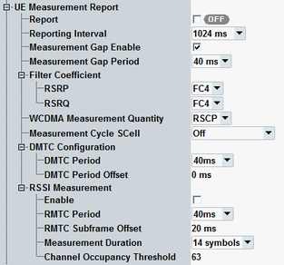

This section configures the UE measurement report. The report is shown in the main signaling view, see "UE Measurement Report".
For enabling of neighbor cell measurements, see "Neighbor Cell Settings".

Enables or disables the UE measurement report.
Configure the other settings before enabling this parameter.
Remote command:Sets the interval between two consecutive measurement reports. Reduce the interval to check whether the UE can cope with a high repetition rate.
Remote command:Enables or disables transmission gaps that can be used by the UE for neighbor cell measurements.
Measurement gaps occur only if at least one neighbor cell measurement is active.
Option R&S CMW-KS510 is required for neighbor cell measurements.
Remote command:Specifies the periodicity of transmission gaps. A measurement gap of 6 ms can occur every 40 ms or every 80 ms.
Remote command:Selects the filter coefficients used by the UE to measure the reference signal received power (RSRP) and the reference signal received quality (RSRQ).
The values are signaled to the UE via the information elements "filterCoefficientRSRP" and "filterCoefficientRSRQ". Do not confuse these elements with the "filterCoefficient" for uplink power control, see "UE Meas. Filter Coefficient".
Remote command:Selects whether the UE must determine the RSCP or the Ec/No during WCDMA neighbor cell measurements. The setting is signaled to the UE.
Option R&S CMW-KS510 is required for neighbor cell measurements.
Remote command:Specifies how often the UE must measure the SCC in state "RRC Added". The setting is signaled to the UE as "measCycleSCell". The measurement period is calculated from the configured value. For details, see 3GPP TS 36.133, section 8.3.3.2.
"Off" means that parameter "measCycleSCell" is not signaled to the UE.
The setting is only visible for carrier aggregation scenarios.
Remote command:The discovery signals measurement timing configuration (DMTC) defines the periodicity and subframe offset of the discovery reference signal (DRS) transmitted by the signaling application for frame structure type 3 (LAA).
The information is signaled to the UE in the IE "MeasDS-Config".
The "DMTC Period Offset" is at least 5 ms smaller than the "DMTC Period".
The settings are configurable per SCC with frame structure type 3. Option R&S CMW-KS514 is required.
Remote command:This node configures received signal strength indicator (RSSI) measurements and channel occupancy measurements of the UE.
Option R&S CMW-KS514 is required for all settings. All settings except the "Channel Occupancy Threshold" are configurable per SCC with frame structure type 3.
Enables the signaling of the IE "measRSSI-ReportConfig" to the UE. If the UE does not get this information, it does not perform RSSI and channel occupancy measurements.
Remote command:The RSSI measurement timing configuration (RMTC) defines the periodicity, subframe offset and duration of the UE measurements. The settings apply to RSSI and channel occupancy measurements.
The information is signaled to the UE in the IE "RMTC-Config".
The "RMTC Subframe Offset" is at least 5 ms smaller than the "RMTC Period".
Remote command:In the channel occupancy measurement, the UE determines the percentage of samples where the measured RSSI value is greater than the channel occupancy threshold.
The setting is signaled to the UE as "channelOccupancyThreshold". The same value applies to all SCCs with frame structure type 3.
Remote command: